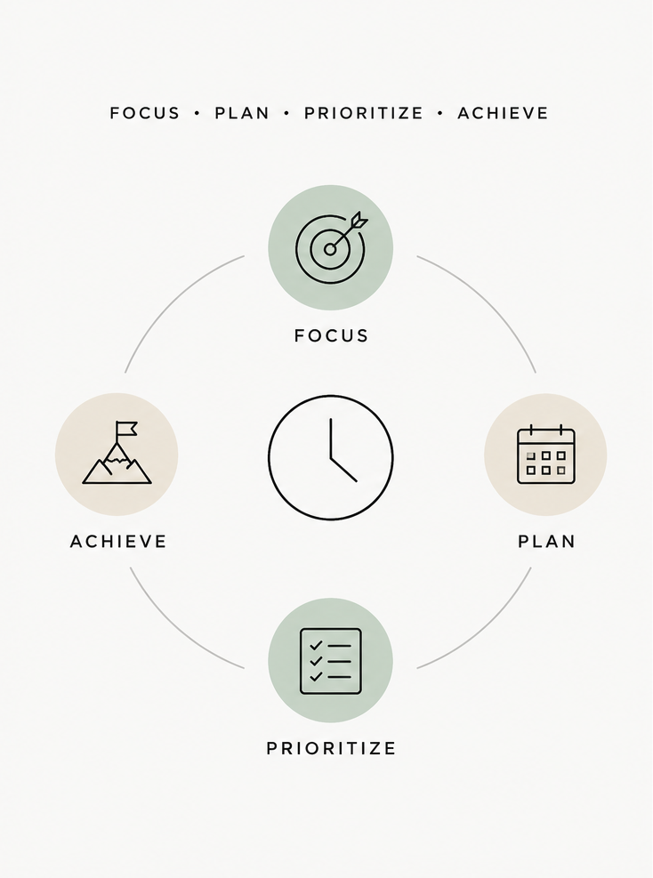

Time, in the modern world, behaves less like a steady river and more like a mischievous current: eddying, accelerating, slipping through our fingers when we try to grasp it too tightly. We live in an era where notifications chirp like restless birds, calendars resemble overbooked airports, and "busy" has become both a badge and a burden.
Yet, amid this chaos, a quiet revolution has emerged: modern time-management techniques. These are not rigid rules etched in stone, but adaptive philosophies that help us dance with time rather than wrestle it.
Let us step into this landscape.
The Myth of Managing Time
Before we explore techniques, let us dismantle a stubborn illusion: you cannot manage time.
Time moves, indifferent and undefeated. What you can manage is your attention, energy, and intent. Modern techniques recognize this shift. They are less about squeezing more into your day and more about choosing what deserves to be there at all.
1. The Pulse of Focus: Pomodoro Technique
Imagine your mind as a muscle that thrives on rhythm.
The Pomodoro Technique alternates between intense focus (25 minutes) and short breaks (5 minutes). It is not just about productivity, it is about sustainability.
Instead of burning out in a marathon, you move in sprints. Each interval becomes a promise: for the next 25 minutes, this is the only thing that exists.
In a world addicted to distraction, this technique feels almost rebellious.
2. Time Blocking: Designing Your Day Like Architecture
If your day were a building, most of us would leave the doors open and hope for the best.
Time blocking changes that. You assign specific hours to specific tasks, turning your calendar into a blueprint rather than a suggestion.
Deep work gets its own sanctuary. Meetings are contained. Even rest is scheduled, not as an afterthought but as a necessity.
The beauty of time blocking lies in its quiet authority. It tells your day: this is where things belong.

3. The Eisenhower Matrix: The Art of Saying No
Modern life excels at making everything feel urgent.
The Eisenhower Matrix slices through this illusion by dividing tasks into four realms:
- Urgent and important: do it now.
- Important, not urgent: schedule it.
- Urgent, not important: delegate it.
- Neither urgent nor important: eliminate it.
It is less a productivity tool and more a philosophical filter. It asks a deceptively simple question: is this truly worth my time?
And sometimes, the most productive action is deletion.
4. Deep Work: Entering the Monastery of the Mind
Coined by Cal Newport, deep work is the ability to focus without distraction on cognitively demanding tasks.
Think of it as a mental monastery in a noisy city: no notifications, no multitasking, just you and the work in its purest form.
In an economy driven by knowledge and creativity, deep work is becoming a rare and valuable skill. Those who cultivate it do not just get more done, they produce work that actually matters.
5. The 2-Minute Rule: Slaying Tiny Dragons
Small tasks are like tiny dragons. Individually harmless, collectively overwhelming.
The rule is simple: if something takes less than two minutes, do it immediately.
Reply to that email. File that document. Make that quick call. This prevents minor tasks from accumulating into a mountain that steals your mental clarity.
6. Energy Management: The Hidden Currency
Modern techniques increasingly recognize a truth often ignored: not all hours are equal.
Your energy fluctuates. Your focus has peaks and valleys. Productivity is not about filling every hour, it is about aligning high-energy moments with high-value work.
- Morning clarity: strategic thinking.
- Afternoon slump: routine tasks.
- Evening calm: reflection or planning.
Time management, at its highest level, becomes energy choreography.
7. Digital Minimalism: Curating Your Attention
Every ping, scroll, and swipe fragments your attention into smaller pieces.
Digital minimalism asks you to be intentional about your digital life:
- Fewer apps.
- Fewer notifications.
- More deliberate usage.
It is not about rejecting technology, but about reclaiming your focus from it. Your attention is not a public resource.
8. The Ivy Lee Method: The Power of Simplicity
At the end of each day, write down the six most important tasks for tomorrow, ranked in order.
The next day, start with the first and move sequentially. No complexity. No overwhelm. Just clarity.
In a world obsessed with optimization, this method whispers a quiet truth: simple systems often outperform sophisticated ones.
The Deeper Insight: Productivity as a Reflection of Values
All these techniques, despite their differences, orbit a common idea: productivity is not about doing more. It is about doing what matters.
Modern time management is less about squeezing efficiency from every minute and more about aligning your time with your priorities, your energy, and your purpose.
Because at the end of the day, time is not just something you spend. It is something you become.
A Closing Thought
If time were a canvas, many of us paint it with urgency, distraction, and obligation.
These techniques hand you a different brush, one that lets you paint with intention.